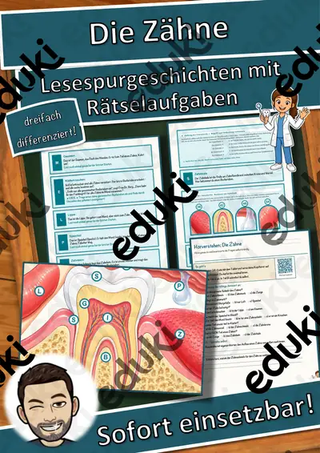
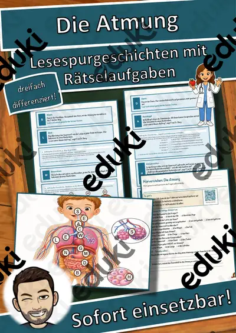
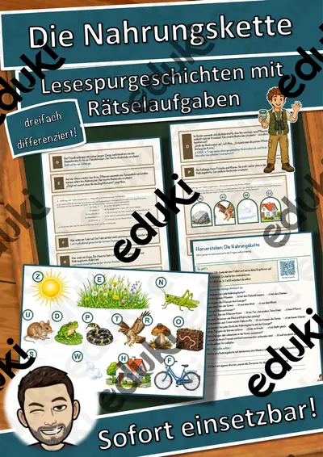
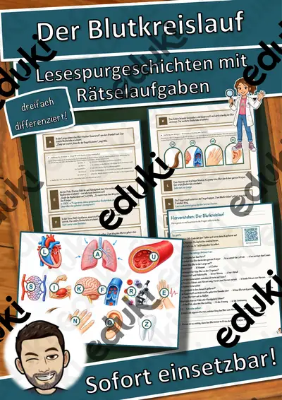

Hier sind die 120 neuesten von 1.265 Materialien. Alle im Material-Finder ansehen

Materialpaket Lesespurgeschichten Biologie Klasse 7 – Der Mensch und seine Gesundheit: 10 Lesespuren mit Rätselaufgaben, dreifach differenziert

Materialpaket Lesespurgeschichten Biologie Klasse 7 – Tiere und Lebensräume: 7 Lesespuren mit Rätselaufgaben, dreifach differenziert

Materialpaket Winter und Advent für die 7. Klasse: 10 Lesespurgeschichten mit Rätselaufgaben fächerübergreifend (Weihnachtsoratorium, Südpol, Eishockey & mehr)

Lesespur: Rauchen und Vapes: warum Nikotin abhängig macht – Lesespurgeschichte mit Rätseln (Klasse 7)

Lesespur: Organspende: eine Entscheidung fürs Leben – Lesespurgeschichte mit Rätseln (Klasse 7)

Lesespur: Der Winterschlaf – Lesespurgeschichte mit Rätseln (Klasse 7)

Lesespur: Der Vogelzug – Lesespurgeschichte mit Rätseln (Klasse 7)

Lesespur: Die Zähne – Lesespurgeschichte mit Rätseln (Klasse 7)

Lesespur: Das Ohr – Lesespurgeschichte mit Rätseln (Klasse 7)

Lesespur: Das Auge – Lesespurgeschichte mit Rätseln (Klasse 7)

Lesespur: Die Muskeln – Lesespurgeschichte mit Rätseln (Klasse 7)

Lesespur: Die Atmung – Lesespurgeschichte mit Rätseln (Klasse 7)

Lesespur: Die Verdauung – Lesespurgeschichte mit Rätseln (Klasse 7)

Lesespur: Das Skelett – Lesespurgeschichte mit Rätseln (Klasse 7)

Lesespur: Die Schlange – Lesespurgeschichte mit Rätseln (Klasse 7)

Lesespur: Die Nahrungskette – Lesespurgeschichte mit Rätseln (Klasse 7)

Lesespur: Der Vogel – Lesespurgeschichte mit Rätseln (Klasse 7)

Lesespur: Die Honigbiene – Lesespurgeschichte mit Rätseln (Klasse 7)

Lesespur: Der Blutkreislauf – Lesespurgeschichte mit Rätseln (Klasse 7)

Lesespur: Der Bauernhof – Lesespurgeschichte mit Rätseln (Klasse 7)

Lesespur: Der Mischwald – Lesespurgeschichte mit Rätseln (Klasse 7)

Hörverstehen Betzdorf: Lückentext mit Wortspeicher & Suchsel (Klasse 5–7)

Hörverstehen Monschau: Lückentext mit Wortspeicher & Suchsel (Klasse 5–7)

Hörverstehen Schwaigern: Lückentext mit Wortspeicher & Suchsel (Klasse 5–7)

Rhein-Hunsrück-Kreis Lückentext mit Wortspeicher Hörverstehen und Suchsel

Ostalbkreis Lückentext mit Wortspeicher Hörverstehen und Suchsel

Ortenaukreis Lückentext mit Wortspeicher Hörverstehen und Suchsel

Landkreis Zwickau Lückentext mit Wortspeicher Hörverstehen und Suchsel

Landkreis Wolfenbüttel Lückentext mit Wortspeicher Hörverstehen und Suchsel

Landkreis Wittmund Lückentext mit Wortspeicher Hörverstehen und Suchsel

Landkreis Wittenberg Lückentext mit Wortspeicher Hörverstehen und Suchsel

Landkreis Wesermarsch Lückentext mit Wortspeicher Hörverstehen und Suchsel

Landkreis Weimarer Land Lückentext mit Wortspeicher Hörverstehen und Suchsel

Landkreis Waldeck-Frankenberg Lückentext mit Wortspeicher Hörverstehen und Suchsel

Landkreis Vulkaneifel Lückentext mit Wortspeicher Hörverstehen und Suchsel

Landkreis Vorpommern-Rügen Lückentext mit Wortspeicher Hörverstehen und Suchsel

Landkreis Vorpommern-Greifswald Lückentext mit Wortspeicher Hörverstehen und Suchsel

Landkreis Uckermark Lückentext mit Wortspeicher Hörverstehen und Suchsel

Landkreis Trier-Saarburg Lückentext mit Wortspeicher Hörverstehen und Suchsel

Landkreis Teltow-Fläming Lückentext mit Wortspeicher Hörverstehen und Suchsel

Landkreis Südliche Weinstraße Lückentext mit Wortspeicher Hörverstehen und Suchsel

Landkreis Sömmerda Lückentext mit Wortspeicher Hörverstehen und Suchsel

Landkreis Sächsische Schweiz-Osterzgebirge Lückentext mit Wortspeicher Hörverstehen und Suchsel

Landkreis Stendal Lückentext mit Wortspeicher Hörverstehen und Suchsel

Landkreis Spree-Neiße Lückentext mit Wortspeicher Hörverstehen und Suchsel

Landkreis Schmalkalden-Meiningen Lückentext mit Wortspeicher Hörverstehen und Suchsel

Landkreis Saalfeld-Rudolstadt Lückentext mit Wortspeicher Hörverstehen und Suchsel

Landkreis Rostock Lückentext mit Wortspeicher Hörverstehen und Suchsel

Landkreis Prignitz Lückentext mit Wortspeicher Hörverstehen und Suchsel

Landkreis Potsdam-Mittelmark Lückentext mit Wortspeicher Hörverstehen und Suchsel

Landkreis Ostprignitz-Ruppin Lückentext mit Wortspeicher Hörverstehen und Suchsel

Landkreis Offenbach Lückentext mit Wortspeicher Hörverstehen und Suchsel

Landkreis Oder-Spree Lückentext mit Wortspeicher Hörverstehen und Suchsel

Landkreis Oberspreewald-Lausitz Lückentext mit Wortspeicher Hörverstehen und Suchsel

Landkreis Oberhavel Lückentext mit Wortspeicher Hörverstehen und Suchsel

Landkreis Nordwestmecklenburg Lückentext mit Wortspeicher Hörverstehen und Suchsel

Landkreis Nordsachsen Lückentext mit Wortspeicher Hörverstehen und Suchsel

Landkreis Nordhausen Lückentext mit Wortspeicher Hörverstehen und Suchsel

Landkreis Märkisch-Oderland Lückentext mit Wortspeicher Hörverstehen und Suchsel

Landkreis Birkenfeld Lückentext mit Wortspeicher Hörverstehen und Suchsel

Landkreis Mittelsachsen Lückentext mit Wortspeicher Hörverstehen und Suchsel

Landkreis Meißen Lückentext mit Wortspeicher Hörverstehen und Suchsel

Landkreis Mecklenburgische Seenplatte Lückentext mit Wortspeicher Hörverstehen und Suchsel

Landkreis Mayen-Koblenz Lückentext mit Wortspeicher Hörverstehen und Suchsel

Landkreis Marburg-Biedenkopf Lückentext mit Wortspeicher Hörverstehen und Suchsel

Landkreis Mansfeld-Südharz Lückentext mit Wortspeicher Hörverstehen und Suchsel

Landkreis Mainz-Bingen Lückentext mit Wortspeicher Hörverstehen und Suchsel

Landkreis Ludwigslust-Parchim Lückentext mit Wortspeicher Hörverstehen und Suchsel

Landkreis Limburg-Weilburg Lückentext mit Wortspeicher Hörverstehen und Suchsel

Landkreis Leipzig Lückentext mit Wortspeicher Hörverstehen und Suchsel

Landkreis Kusel Lückentext mit Wortspeicher Hörverstehen und Suchsel

Landkreis Kassel Lückentext mit Wortspeicher Hörverstehen und Suchsel

Landkreis Kaiserslautern Lückentext mit Wortspeicher Hörverstehen und Suchsel

Landkreis Jerichower Land Lückentext mit Wortspeicher Hörverstehen und Suchsel

Landkreis Hildburghausen Lückentext mit Wortspeicher Hörverstehen und Suchsel

Landkreis Hersfeld-Rotenburg Lückentext mit Wortspeicher Hörverstehen und Suchsel

Landkreis Havelland Lückentext mit Wortspeicher Hörverstehen und Suchsel

Landkreis Harz Lückentext mit Wortspeicher Hörverstehen und Suchsel

Landkreis Görlitz Lückentext mit Wortspeicher Hörverstehen und Suchsel

Landkreis Groß-Gerau Lückentext mit Wortspeicher Hörverstehen und Suchsel

Landkreis Greiz Lückentext mit Wortspeicher Hörverstehen und Suchsel

Landkreis Gotha Lückentext mit Wortspeicher Hörverstehen und Suchsel

Landkreis Gießen Lückentext mit Wortspeicher Hörverstehen und Suchsel

Landkreis Germersheim Lückentext mit Wortspeicher Hörverstehen und Suchsel

Landkreis Fulda Lückentext mit Wortspeicher Hörverstehen und Suchsel

Landkreis Elbe-Elster Lückentext mit Wortspeicher Hörverstehen und Suchsel

Landkreis Eichsfeld Lückentext mit Wortspeicher Hörverstehen und Suchsel

Landkreis Darmstadt-Dieburg Lückentext mit Wortspeicher Hörverstehen und Suchsel

Landkreis Dahme-Spreewald Lückentext mit Wortspeicher Hörverstehen und Suchsel

Landkreis Cochem-Zell Lückentext mit Wortspeicher Hörverstehen und Suchsel

Landkreis Bernkastel-Wittlich Lückentext mit Wortspeicher Hörverstehen und Suchsel

Landkreis Bergstraße Lückentext mit Wortspeicher Hörverstehen und Suchsel

Landkreis Bautzen Lückentext mit Wortspeicher Hörverstehen und Suchsel

Landkreis Barnim Lückentext mit Wortspeicher Hörverstehen und Suchsel

Landkreis Bad Kreuznach Lückentext mit Wortspeicher Hörverstehen und Suchsel

Landkreis Bad Dürkheim Lückentext mit Wortspeicher Hörverstehen und Suchsel

Landkreis Alzey-Worms Lückentext mit Wortspeicher Hörverstehen und Suchsel

Landkreis Altenkirchen (Westerwald) Lückentext mit Wortspeicher Hörverstehen und Suchsel

Landkreis Altenburger Land Lückentext mit Wortspeicher Hörverstehen und Suchsel

Landkreis Ahrweiler Lückentext mit Wortspeicher Hörverstehen und Suchsel

Lahn-Dill-Kreis Lückentext mit Wortspeicher Hörverstehen und Suchsel

Kyffhäuserkreis Lückentext mit Wortspeicher Hörverstehen und Suchsel

Kreis Stormarn Lückentext mit Wortspeicher Hörverstehen und Suchsel

Kreis Steinburg Lückentext mit Wortspeicher Hörverstehen und Suchsel

Kreis Segeberg Lückentext mit Wortspeicher Hörverstehen und Suchsel

Kreis Schleswig-Flensburg Lückentext mit Wortspeicher Hörverstehen und Suchsel

Kreis Rendsburg-Eckernförde Lückentext mit Wortspeicher Hörverstehen und Suchsel

Kreis Plön Lückentext mit Wortspeicher Hörverstehen und Suchsel

Kreis Ostholstein Lückentext mit Wortspeicher Hörverstehen und Suchsel

Kreis Nordfriesland Lückentext mit Wortspeicher Hörverstehen und Suchsel

Kreis Herzogtum Lauenburg Lückentext mit Wortspeicher Hörverstehen und Suchsel

Kreis Dithmarschen Lückentext mit Wortspeicher Hörverstehen und Suchsel

Ilm-Kreis Lückentext mit Wortspeicher Hörverstehen und Suchsel

Hohenlohekreis Lückentext mit Wortspeicher Hörverstehen und Suchsel

Hochtaunuskreis Lückentext mit Wortspeicher Hörverstehen und Suchsel

Hochsauerlandkreis Lückentext mit Wortspeicher Hörverstehen und Suchsel

Heidekreis Lückentext mit Wortspeicher Hörverstehen und Suchsel

Erzgebirgskreis Lückentext mit Wortspeicher Hörverstehen und Suchsel

Enzkreis Lückentext mit Wortspeicher Hörverstehen und Suchsel

Eifelkreis Bitburg-Prüm Lückentext mit Wortspeicher Hörverstehen und Suchsel
Keine Materialien gefunden – versuch einen anderen Suchbegriff oder Filter.